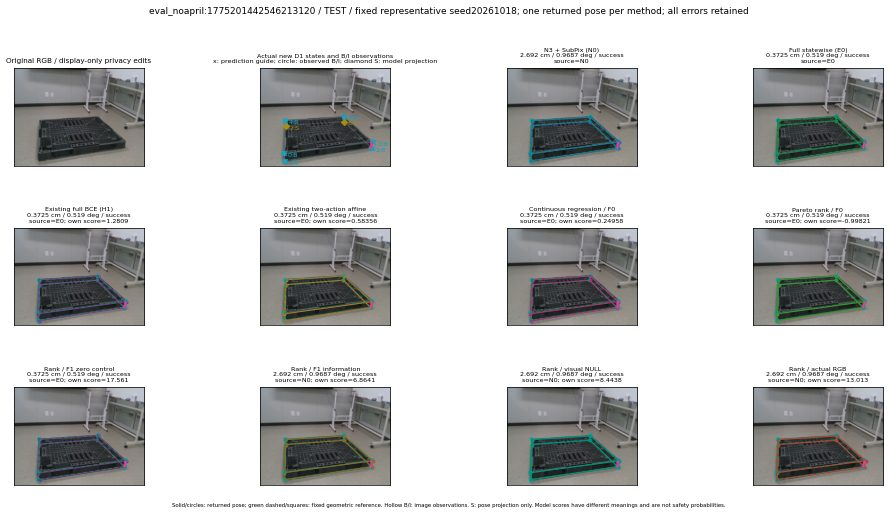

실선은 반환 자세, 초록 점선은 고정 기하 참조입니다. S는 영상 관측이 아닙니다. 점수는 모델별 의미가 다르며 보정된 안전 확률이 아닙니다. 개인정보 처리는 표시 사본에만 적용했습니다.
| 방법·seed | 위치 / 회전 / 공동성공 | 실제 출처 | 선택 후보 | 각 모델 자체 점수 |
|---|---|---|---|---|
| N0 | 2.692 cm / 0.9687 deg / success | N0 | N/A | N/A |
| E0 | 0.3725 cm / 0.519 deg / success | E0 | N/A | N/A |
| E0_REGENERATED | 0.3725 cm / 0.519 deg / success | E0 | E0_REGENERATED | N/A |
| POSEFIX_SUBPIX_PF_ANCHOR | 3.532 cm / 0.8798 deg / success | OTHER | N/A | N/A |
| POSEFIX_SUBPIX_YOLO_ANCHOR | 3.532 cm / 0.8798 deg / success | OTHER | N/A | N/A |
| D1_H1_MLP_s20261018 | 0.3725 cm / 0.519 deg / success | E0 | E0_REGENERATED | 1.2808704376220703 |
| D1_H1_MLP_s20261019 | 0.3725 cm / 0.519 deg / success | E0 | E0_REGENERATED | 0.9649141430854797 |
| D1_H1_MLP_s20261020 | 0.3725 cm / 0.519 deg / success | E0 | E0_REGENERATED | 1.2957289218902588 |
| D1_H1_PAIR_MLP_s20261018 | 0.3725 cm / 0.519 deg / success | E0 | E0_REGENERATED | -0.11612897366285324 |
| D1_H1_PAIR_MLP_s20261019 | 0.3725 cm / 0.519 deg / success | E0 | E0_REGENERATED | 0.3731440007686615 |
| D1_H1_PAIR_MLP_s20261020 | 0.3725 cm / 0.519 deg / success | E0 | E0_REGENERATED | 0.908604621887207 |
| D1_H1_PAIR_ROLE_AFFINE_s20261018 | 0.3725 cm / 0.519 deg / success | E0 | E0_REGENERATED | 0.5835602283477783 |
| D1_H1_PAIR_ROLE_AFFINE_s20261019 | 0.3725 cm / 0.519 deg / success | E0 | E0_REGENERATED | 0.6024784445762634 |
| D1_H1_PAIR_ROLE_AFFINE_s20261020 | 0.3725 cm / 0.519 deg / success | E0 | E0_REGENERATED | 0.5048550367355347 |
| R_CONT_F0_s20261018 | 0.3725 cm / 0.519 deg / success | E0 | E0_REGENERATED | 0.24958115816116333 |
| R_CONT_F0_s20261019 | 0.3725 cm / 0.519 deg / success | E0 | E0_REGENERATED | 0.24914191663265228 |
| R_CONT_F0_s20261020 | 0.3725 cm / 0.519 deg / success | E0 | E0_REGENERATED | 0.30202698707580566 |
| R_ORDER_F0_s20261018 | 0.3725 cm / 0.519 deg / success | E0 | E0_REGENERATED | -0.9982068538665771 |
| R_ORDER_F0_s20261019 | 0.3725 cm / 0.519 deg / success | E0 | E0_REGENERATED | -1.562824010848999 |
| R_ORDER_F0_s20261020 | 0.3725 cm / 0.519 deg / success | E0 | E0_REGENERATED | 10.968777656555176 |
| R_ORDER_F1_ZERO_s20261018 | 0.3725 cm / 0.519 deg / success | E0 | E0_REGENERATED | 17.561492919921875 |
| R_ORDER_F1_ZERO_s20261019 | 0.3725 cm / 0.519 deg / success | E0 | E0_REGENERATED | 10.510445594787598 |
| R_ORDER_F1_ZERO_s20261020 | 0.3725 cm / 0.519 deg / success | E0 | E0_REGENERATED | 8.3706693649292 |
| R_ORDER_F1_s20261018 | 2.692 cm / 0.9687 deg / success | N0 | N0 | 6.8640546798706055 |
| R_ORDER_F1_s20261019 | 2.692 cm / 0.9687 deg / success | N0 | N0 | 9.061382293701172 |
| R_ORDER_F1_s20261020 | 1.123 cm / 0.04406 deg / success | OTHER | WD0/ORIGINAL_WD/selected | 2.7703235149383545 |
| V_ORDER_NULL_s20261018 | 2.692 cm / 0.9687 deg / success | N0 | N0 | 8.443821907043457 |
| V_ORDER_NULL_s20261019 | 2.692 cm / 0.9687 deg / success | N0 | N0 | 4.749059677124023 |
| V_ORDER_NULL_s20261020 | 1.123 cm / 0.04406 deg / success | OTHER | WD0/ORIGINAL_WD/selected | 0.57818204164505 |
| V_ORDER_RGB_s20261018 | 2.692 cm / 0.9687 deg / success | N0 | N0 | 13.013178825378418 |
| V_ORDER_RGB_s20261019 | 2.692 cm / 0.9687 deg / success | N0 | N0 | 4.797746658325195 |
| V_ORDER_RGB_s20261020 | 2.692 cm / 0.9687 deg / success | N0 | N0 | -9.217540740966797 |